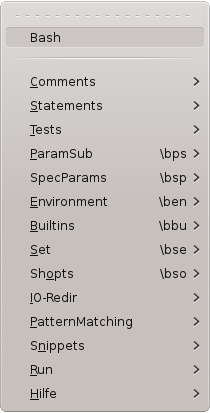

| Bash Support – Vim Plug-In | ||||
|
plug-in overview |
view on vim.org |
view on GitHub |
||
|
 root menu |
Bash Support - Vim Plug-In( version 4.2.1 )View the ReadmeRead the Bash Support Help File The key mappings of this plugin (PDF) |
|
| FEATURES |
|---|
Speed-up the development of Bash scripts:
|
| Menus | Explanation |
|---|---|
| |
Menu Comments : insert comments |
Page updated: December 26 2015 / Mail to: Wolfgang Mehner